| 도구 포켓 | |||
|---|---|---|---|
| 방진고글 |
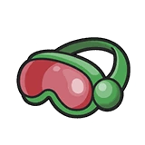 |
모래바람, 눈보라, 화산재 등 기후로 인해 행동하기 어려운 곳을 보다 편하게 이동할 수 있습니다. 악기상 지역의 피로도 페널티가 다소 감소합니다. 깨질 수 있습니다. |
|
| 은밀망토 |
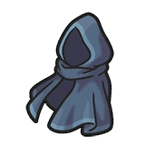 |
이 도구를 두르고 있으면, 평소보다 야생의 난폭한 포켓몬에게 덮쳐지기 어려워집니다. 몰래 이동할 때 추가 보정이 붙습니다. |
|
| 빨간실 |

|
이데아지방에서 빨간 실은 곧 인연의 상징, 내지는 그 ‘준비’를 뜻합니다. 마음을 전하기에 앞서, 빨간 실을 지니고 있지 않으면 「고백」할 수 없습니다. |
|
| 행운의향로 | 야생의 포켓몬과 배틀한 후에도 주위에서 가끔 아이템을 찾을 수 있습니다. | ||
| 부적금화 |
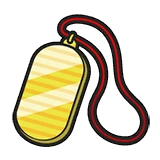 |
야생의 포켓몬과 배틀한 후에도 주위에서 소량의 돈을 찾을 수 있습니다. | |
| 검은철구 |
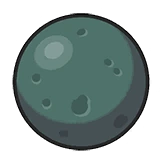 |
??? | |
| 파워-트레이닝키트 |
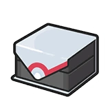 |
??? | |
| 에레키부스터 |
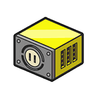 |
언제든 어디서든, 산에 조난됐더라도 전기를 공급받을 수 있습니다! | |
| 마그마부스터 |
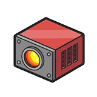 |
언제든 어디서든, 바다를 표류하는 중이라도 불을 사용할 수 있습니다! | |
| 회복 포켓 | |||
| 엄청나게맛있는물 |
체육관의 도전자를 위해 준비된 특별한 음료입니다. 평범한 물처럼 보이지만, 여태 먹은 어느 음료보다도 청량할 것이라고 자신합니다! 사용시 피로도를 10점 감소시켜줍니다. |
||
| 기력의조각 |
사용할 경우 피로도를 3점 감소시킵니다. ( 탈진에서 벗어날 수도 있습니다. ) 배틀 중이 아닐 때, 기절한 포켓몬을 그저 그런 컨디션으로 만들어 깨울 수 있습니다. |
||
| 기력의덩어리 |
사용할 경우 피로도를 5점 감소시킵니다. ( 탈진에서 벗어날 수도 있습니다. ) 배틀 중이 아닐 때, 기절한 포켓몬을 최상의 컨디션으로 만들어 깨울 수 있습니다! |
||
| 잠깨는약 |
피로도를 7점까지 추가로 사용할 수 있습니다. 피로도는 다음 로그 시점에 배점 그대로 인계되며, 다음 로그에서 「피로도를 소모하는 행동」이 있을 경우, 피로도가 1점씩 추가로 상승함에 주의! |
||
| 몬스터볼 포켓 | |||
| 나무열매 포켓 | |||
| 비전머신 포켓 | |||
| 비전머신01 바위깨기 |
바위를 단번에 깰 수 있는 묘리를 담은 비전입니다. 그 바위보다도 몸집이 작더라도, 작은 틈만 있다면 양단할 수 있습니다. |
||
| 비전머신02 풀베기 |
나무를 단칼에 벨 수 있는 기술을 담은 비전입니다. 너무 큰 나무는 벨 수 없습니다. 포켓몬도 생명입니다···. |
||
| 비전머신03 파도타기 |
파도의 흐름을 타고 바다를 떠다니는 방식을 담은 비전입니다. 유영하는 포켓몬의 위에서, 이전에 가지 못한 더 머나먼 길을 향하여 나아갑시다! |
||
| 비전머신04 괴력 |
일순간 엄청난 힘을 뿜어낼 수 있는 비결을 담은 비전입니다. 체력을 일부 사용하지만, 빈틈 하나 없는 거석이라도 손쉽게 움직일 수 있습니다. |
||
| 비전머신05 플래쉬 |
발광기관의 조절에 대한 지식을 담은 비전입니다. 어두운 동굴에서 손전등이나 작은 불씨에 의존하는 것이 싫다면, 이 기술이 제격일 것입니다. 불이 켜진 방처럼, 거의 방해가 없이 이동할 수 있습니다. ( ※ 발광으로 인해 화난 포켓몬이 등장할 수 있습니다. ) |
||
| 비전머신06 바다회오리 |
성난 채 입을 벌린 바다를 잠재울 수 있는 계책을 담은 비전입니다. 만두는 사용하지 않습니다! |
||
| 비전머신07 다이빙 |
깊은 심해로 집어삼켜져도 호흡을 가능하게 하는 신비를 담은 비전입니다. 위험한 바다에선, 절대 사용하지 마십시오. |
||
| 비전머신08 안개제거 |
시야를 가득 채운 안개를 한 순간에 날려보낼 수 있는 묘기를 담은 비전입니다. 시야가 트이는 건 일순간이니, 눈 크게 뜨고 봅시다! |
||
| 비전머신09 공중날기 |
몸을 가볍게 만들어, 땅의 속박에서 벗어날 수 있게 만드는 의지를 담은 비전입니다. 이동이 매우 자유로워지며, 여행의 발자취가 남은 곳을 아주 빠르게 이동할 수 있습니다. |
||
| 비전머신10 록클라임 |
... | ||
| 비전머신11 폭포오르기 |
... | ||
| 비전머신12 ??? |
??? | ||
| 중요한 물건 포켓 | |||
| 이데아티켓 |
미스트 코퍼레이션의 도장이 찍혀있는 티켓. 드림시커호에 탑승하기 위해 필요하다. |
||
| 스타팅 아이템 포켓 | |||
| 실프스코프 |
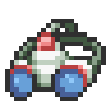 |
실프주식회사가 개발한 스코프. ‘으스스한 스폿’에서 사용하면 ‘심령현상’을 파훼할 수 있을지도 모른다. |
|
| 포켓기어 |
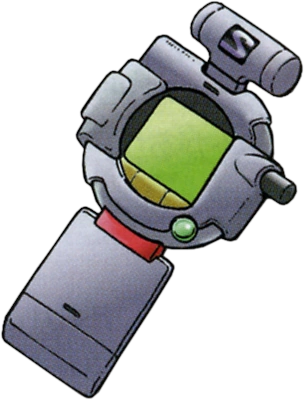 |
지도, 전화, 라디오 등으로 전환할 수 있는 다기능 디바이스. 유행에는 조금 낡았지만, 포함된 기능에는 충실한 성능이다. 도감은 포함되어 있지 않다. |
|
| 그라시데아꽃 |
아름다운 꽃, 생일이나 기념일 등에 감사의 마음을 전하기 위해 부케로 만들어 보내는 일이 있다. 소중한 포켓몬 또는 사람에게 선물하거나, 꽃다발이 어울리는 장소에 둔다면 「운명적인 만남」을 기대할 수 있을지도 모른다. 쉐이미가 엔트리에 있다면, 선물하는 것으로 폼체인지할 수 있다. |
||
| 포켓치 |
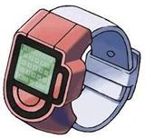 |
포켓치주식회사에서 트레이너들을 위해 만든 손목시계형 도구. 기본적으로 시간의 확인부터, 메모, 계산, 만보기, 포켓몬의 상태 확인, 지도, 캘린더 등으로 활용할 수 있는 다기능 시계. 단, 전화로는 사용할 수 없다. |
|
| 다녹은구름아이스 |
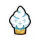 |
한때는 구름시티의 명물 아이스였지만, 당신이 이데아지방으로 넘어오는 사이 어느샌가 전부 녹았다. 사람이 먹으면 ‘피로도’를 1 회복할 수 있고, 포켓몬이 먹을 경우 HP와 모든 상태이상을 회복할 수 있다. |
|
| 카레요리키트 |
카레를 요리할 수 있는 간단한 솥과 점화 키트. 카레 루도 포함되어 있어, 「식재료」 또는 「나무열매」를 3개 이상 조합해 사용하는 것으로 카레를 만들거나, 다른 요리를 만들 수 있다. (*보너스는 카레와 동일하다) 보너스는 #규칙 항목의 아웃도어 트래킹 내 세부 항목 참조. |
||